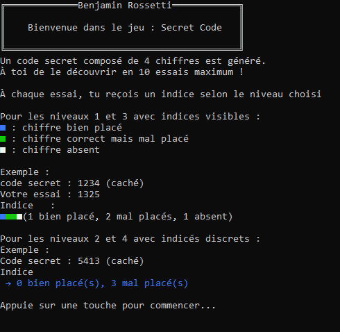

Bonjour :)
Bienvenue sur mon site Web !
Je m'appelle Benjamin Rossetti, je suis apprenti informaticien à l'ETML.
Benjamin Rossetti || Apprenti Informaticien
Bienvenue sur mon site Web !
Je m'appelle Benjamin Rossetti, je suis apprenti informaticien à l'ETML.
J'ai débuté mon école obligatoire dans l'établissement scolaire de Begnins, puis j'ai déménagé à Borex où j'ai fini mon école obligatoire dans l'établissement d'Elisabeth de Porte.
Puis j'ai fait une année en école de culture générale au gymnase de Nyon avant de venir à l'ETML.
Au début je voulais devenir pâtissier-confiseur, mais après un test anti-allergènes, j'ai été détecté comme hypersensible à la farine.
J'ai donc dû trouver une solution rapidement, et j'ai choisi la voie de l'Informatique.
Passons aux choses plus intéressantes, du concret. Je ne fait pas de l'informatique pour rien. C'est pourquoi je souhaite partager un de mes projets que j'ai fait durant les premières semaines de mon apprentissage à l'ETML.
En début d'année, j'ai codé un jeu, dans le language de programmation C# dans le cadre d'un des modules que nous avions. J'ai dû coder un Master Mind, ou le but du jeu est de deviner une série de 4 nombres totalement aléatoire en 10 essais. 4 niveaux de difficulté différents.
⚠️ Windows peut afficher un avertissement de sécurité car le jeu est un projet personnel non signé. Le fichier est sûr.
Voici un apperçu du jeu

Source: ChatGPT, W3School, Hostinger
Note: Ce site web a été codé par moi même avec l'aide de l'IA.
Mais aucun code n'a été copié-collé.
Je me suis aussi inspiré du site Web de Hostinger pour le style de ma page.
Ce site sera mis à jour de temps en temps selon ma situation.
PS: Merci d'avoir consacré du temps à lire mon histoire :)